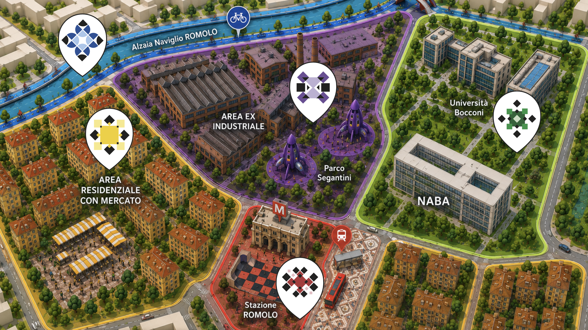

Il progetto nasce dalla richiesta di sviluppare l’ identità visiva dei NABA Communication Awards 2026, un evento dedicato alla valorizzazione della creatività, delle idee e dei progetti degli studenti.
Il concept si sviluppa attorno alla metafora dei tarocchi, reinterpretati come un sistema visivo capace di rappresentare l’individualità e il senso di appartenenza a una comunità creativa.
Ogni studente viene associato a un Arcano, una carta che racchiude simbolicamente la sua personalità, il suo percorso, le sue competenze e il suo modo di esprimersi. Come nei tarocchi tradizionali, ogni carta possiede un’identità autonoma, caratterizzata da simboli e significati specifici.
L’insieme degli Arcani dà origine a un mazzo di carte, metafora della comunità NABA. Le singole carte, pur mantenendo la propria unicità, entrano in relazione tra loro, costruendo un sistema collettivo in cui esperienze, linguaggi e visioni differenti si incontrano e si arricchiscono reciprocamente.
Il progetto esplora così il rapporto tra identità individuale e collettiva, raccontando come il valore di ogni studente non risieda soltanto nelle proprie capacità, ma anche nelle connessioni e nelle collaborazioni che contribuisce a creare.
Stuck
Il progetto nasce dallo studio psicologico delle relazioni tossiche, intese
non come relazioni conflittuali isolate, ma come sistemi relazionali
disfunzionali basati su pattern ripetitivi che si strutturano nel tempo.
La tossicità non è determinata da singoli episodi, ma dal modo in cui le
interazioni si ripetono e alterano l’
equilibrio tra le parti.
La teoria del
trauma bonding spiega inoltre come l’
alternanza ciclica tra tensione e
riavvicinamento rafforzi il legame invece di indebolirlo.
Queste dinamiche vengono tradotte in una forma astratta:
due linee rappresentano due entità all’interno dello stesso sistema
relazionale.
Le interazioni tra le linee sono manifestazioni visive dei pattern tossici.
L’uso di un linguaggio minimale e non figurativo consente di evitare una
narrazione personale e mantenendo una rappresentazione universale.
La realizzazione avviene attraverso due linee controllate da un
controller MIDI. La narrazione visiva cambia in base alle azioni
degli utenti, che intervengono su parametri come forma,
dimensione e spazio occupato.
Due persone operano simultaneamente sul controller, seguendo il
ritmo di una musica strumentale caratterizzata da un crescendo di
ansia e angoscia.
Il punto più oscuro non è lo scontro, ma la progressiva scomparsa di
una delle due identità, inglobata dall’altra.
Vite in mosaico, Romolo

Il progetto trasforma Romolo in un grande mosaico urbano: non solo
un’immagine, ma una dichiarazione di identità. Ogni tessera rappresenta
una storia, un luogo, una persona. Da sole sono frammenti; insieme
diventano una forma nuova, armonica, riconoscibile.
Per questo il mosaico è il simbolo scelto: racconta l’
unità nella diversità, la
forza di un quartiere che vive proprio grazie all’incontro tra elementi diversi.
Le zone di Romolo si esprimono attraverso colori e pattern distinti.
Le superfici diventano luoghi di interazione, abbiamo suddiviso romolo in
5 zone ognuna rappresenta un tratto distintivo del luogo,
che insieme ne creano l’identità.
ZONA ROSSA, AREA STAZIONE: IL MOSAICO DEL MOVIMENTO
La Zona Rossa rappresenta il cuore dinamico del progetto, un luogo di transito,
incontro e trasformazione continua.
Prende in considerazione: la stazione, la metro, il parcheggio dei bus, Il parcheggio
multipiano situato dietro la stazione Romolo
ZONA BLU, AREA NA VIGLIO: IL MOSAICO DEL FLUSSO
La Zona Blu interessa il tratto del Naviglio Pavese in corrispondenza della fermata Romolo, dove il
canale scorre tra i ponti pedonali e la pista ciclabile.
Il ponte d’ingresso accoglie la scritta “MOSAICO DEL FLUSSO”
, segnalando l’inizio della zona.
Lungo la pista ciclabile si sviluppano pattern a mosaico che richiamano onde e riflessi,
accompagnati da installazioni scultoree leggere che seguono il ritmo del canale.
Piccoli mosaici di riparazione riqualificano i punti degradati, mentre le panchine rivestite in mosaico
offrono spazi di sosta e osservazione.
Il Naviglio si trasforma così in un paesaggio urbano vivo, dove arte, acqua e mobilità si incontrano.
ZONA VERDE, AREA UNIVERSIT ARIA: IL MOSAICO DELLA CONOSCENZA
L’area universitaria di Romolo comprende le zone di NABA e IULM e viene ripensata
come un luogo di incontro tra arte, tecnologia e sapere.
Ogni mosaico racconta un aspetto della conoscenza: geometrie, simboli,
connessioni e riferimenti visivi al mondo accademico.
In alcuni punti, il percorso si arricchisce con reinterpretazioni in mosaico di celebri
opere d’arte, creando così un dialogo tra cultura classica e creatività contemporanea.
ZONA VIOLA, AREA EX INDUSTRIALE: IL MOSAICO DEL FUTURO
Nel sud-ovest di Milano si concentrano diverse ex aree industriali oggi trasformate.
La più nota è quella dell’ex fonderia Vedani, in via Schievano: un tempo impianto di
lavorazione dell’alluminio, oggi è diventata The Sign, un complesso di uffici e spazi
pubblici sostenibili.
ZONA GIALLA, AREA RESIDENZIALE: IL MOSAICO DELLA COMUNITA’
In questi quartieri, un tempo abitati da operai e famiglie legate al tessuto industriale, oggi si
intrecciano culture, lingue e tradizioni provenienti da ogni parte del mondo. Romolo è diventata
un mosaico umano, dove ogni tessera rappresenta un volto, una storia, un modo diverso di
vivere la città.